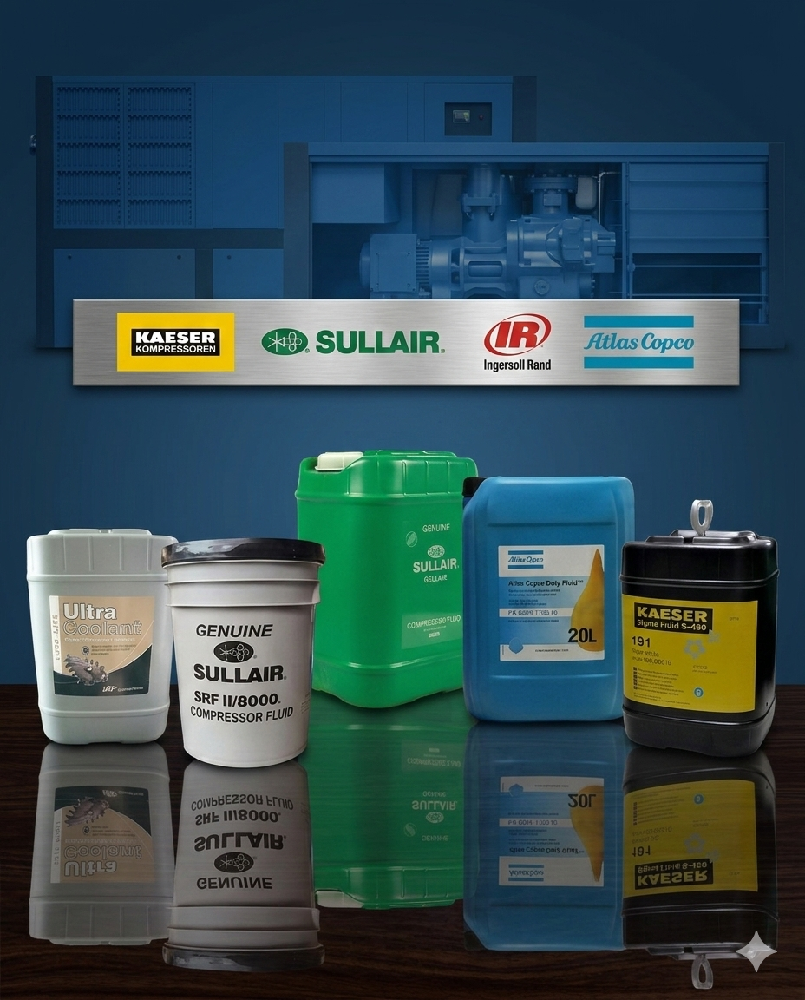
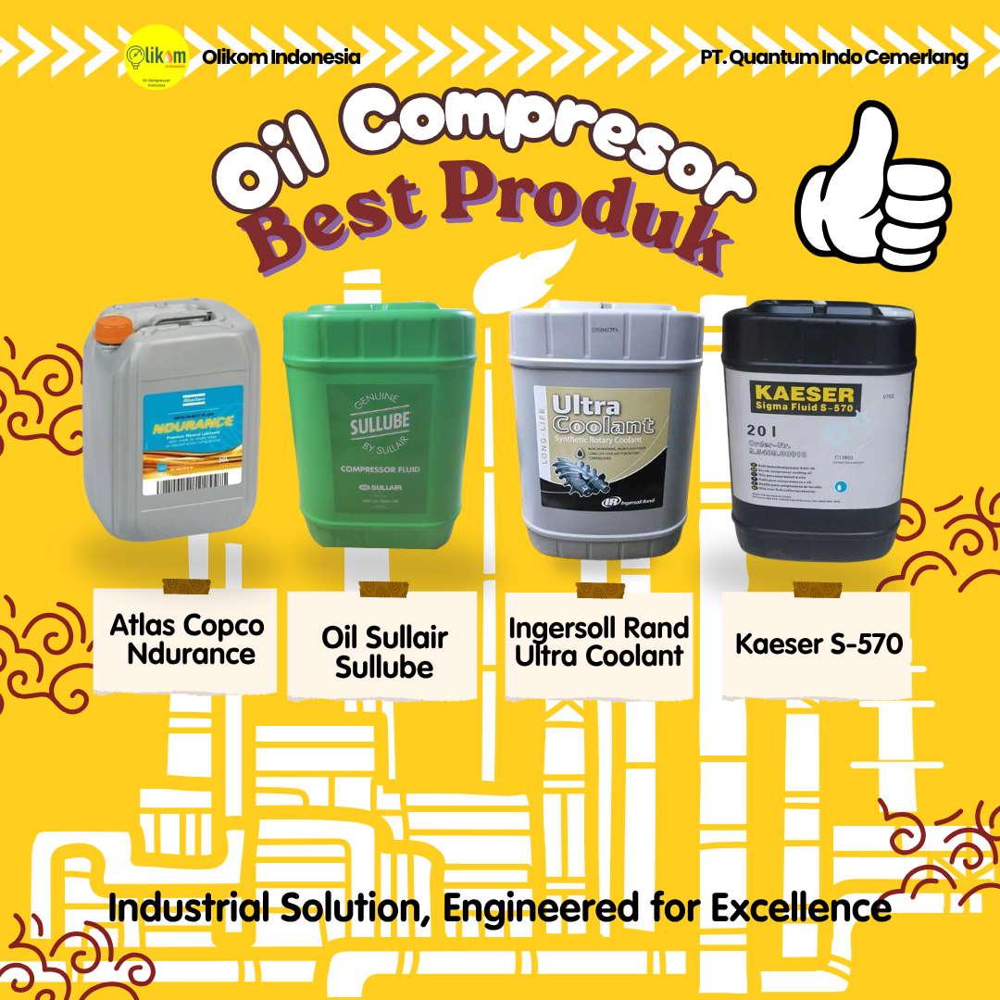
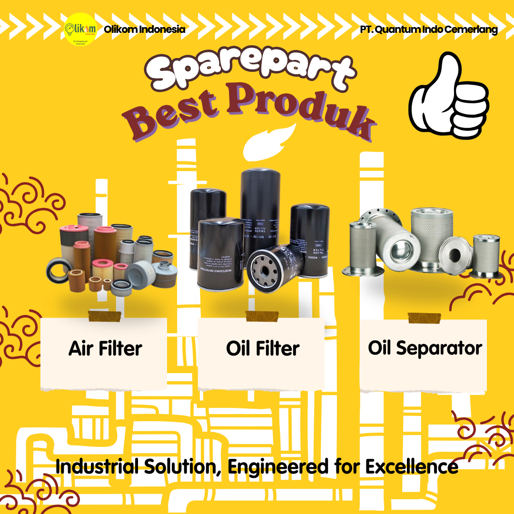
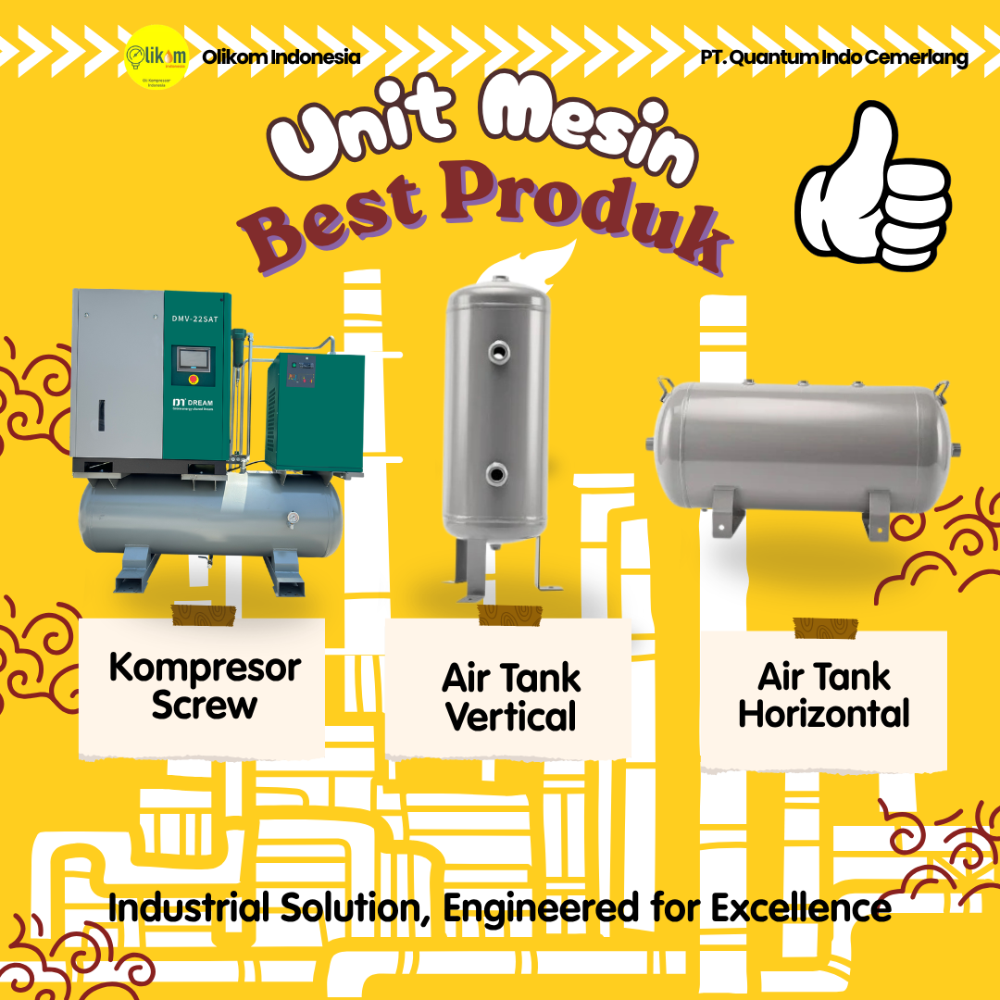

Lebih dari sekadar produk unggulan Oli Kompresor yang menjadi best-seller, Olikom Indonesia juga menyediakan kebutuhan Sparepart dan Unit Mesin Kompresor Udara terlengkap. Lindungi mesin Anda, tingkatkan efisiensi, dan kurangi biaya perawatan bersama kami.



Pilihan oli kompresor terbaik untuk performa maksimal mesin industri Anda.

Atlas Copco Ndurance: Oli mineral premium untuk perlindungan standar mesin GA-GX dengan harga ekonomis. Sullair Sullube: Oli sintetis anti-kerak (varnish) yang sangat awet hingga 8.000 jam pemakaian. Ingersoll Rand Ultra Coolant: Cairan pendingin sintetis berperforma tinggi untuk menjaga suhu mesin tetap stabil di beban berat. Kaeser Sigma Fluid S-570: Oli sintetis khusus mesin Kaeser yang unggul dalam memisahkan air dan mencegah korosi.
Pesan via WhatsApp
Air Filter (Filter Udara): Menyaring debu dan partikel dari udara luar sebelum masuk ke ruang kompresi agar piston atau screw tidak cepat aus. Oil Filter (Filter Oli): Membersihkan kotoran dan serpihan logam dari oli pelumas untuk menjaga kebersihan sistem internal mesin. Oil Separator (Pemisah Oli): Memisahkan kabut oli dari udara tekan hasil kompresi, sehingga udara yang dikeluarkan bersih dan oli bisa digunakan kembali.
Pesan via WhatsApp
Kompresor Screw: Mesin utama penghasil udara tekan untuk skala industri besar dengan suara lebih halus dan stabil. Air Tank Vertical: Tangki penampung udara dengan posisi berdiri (vertikal), sangat efisien karena hemat tempat (compact). Air Tank Horizontal: Tangki penampung udara dengan posisi mendatar (horizontal), stabil dan sering digunakan sebagai dudukan mesin kompresor di atasnya.
Pesan via WhatsAppTemukan tips, panduan, dan informasi terbaru seputar perawatan kompresor.
Memuat artikel terbaru...